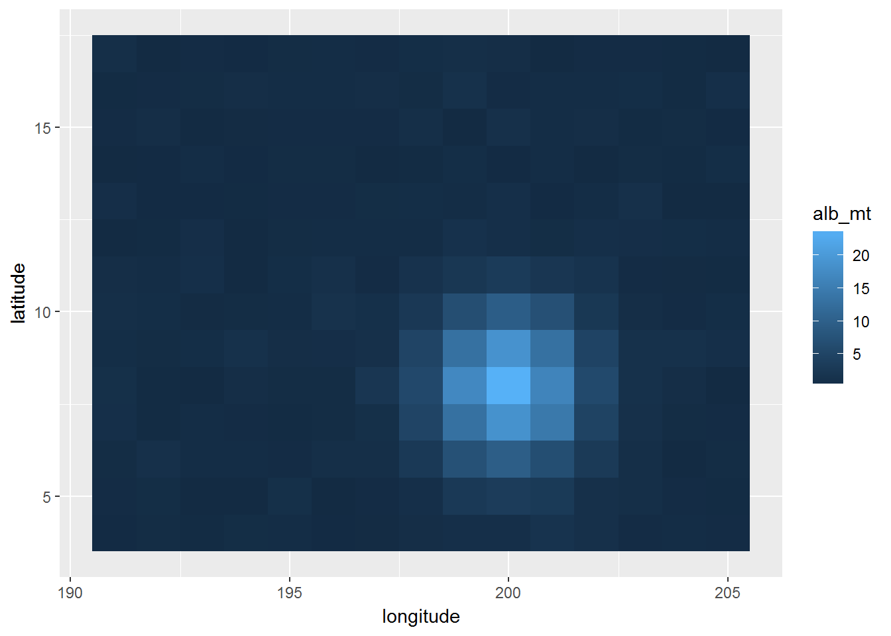
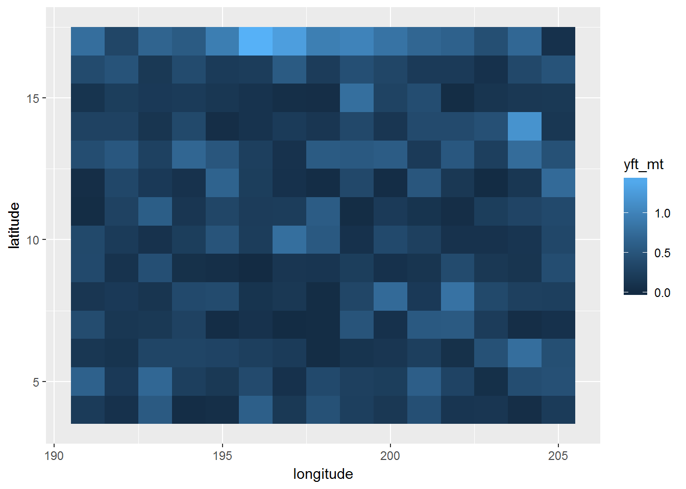
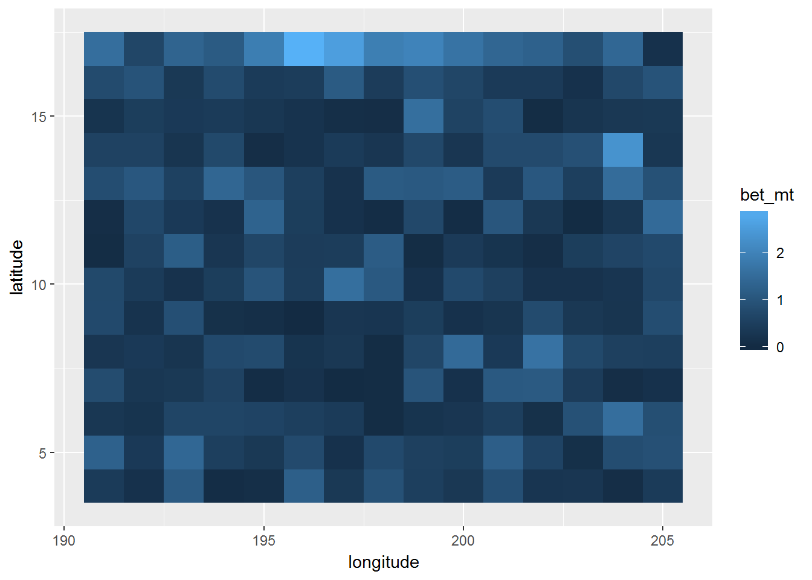
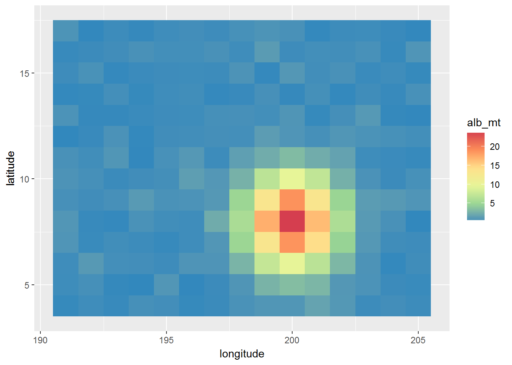
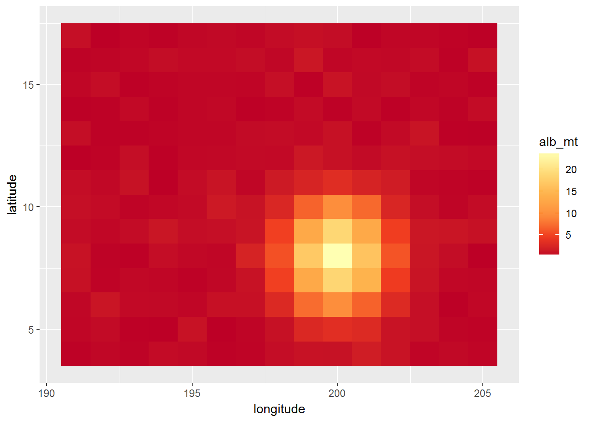
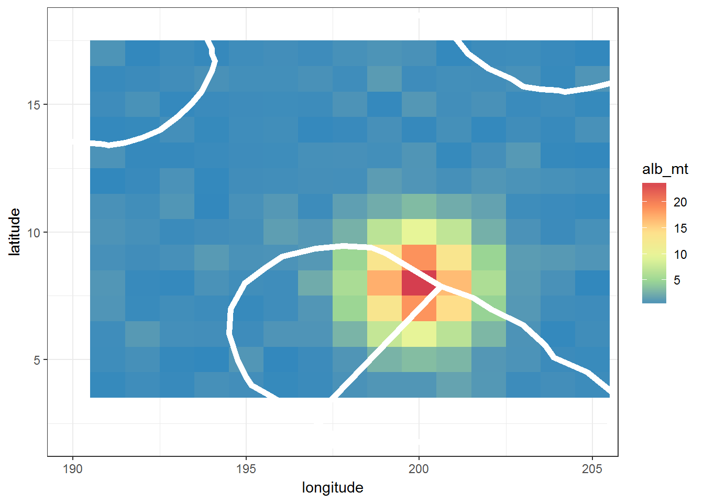
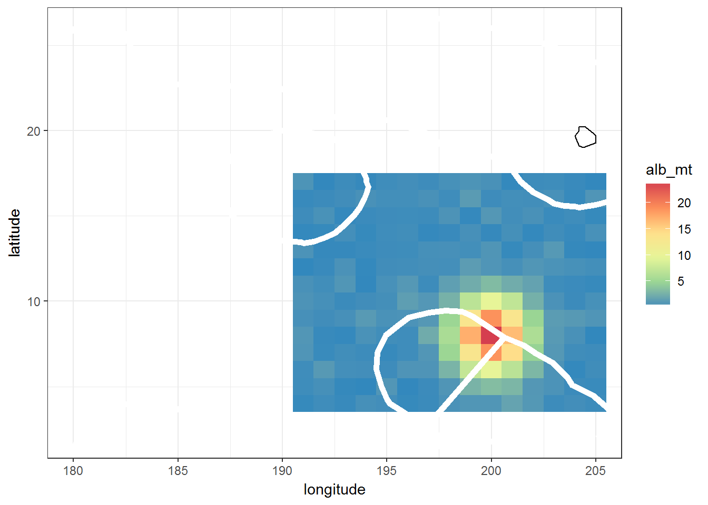
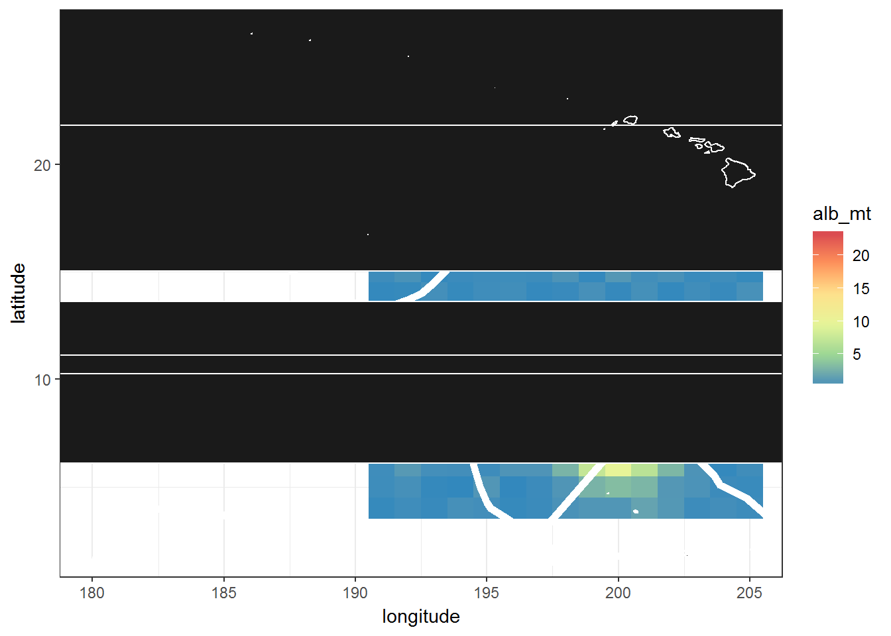
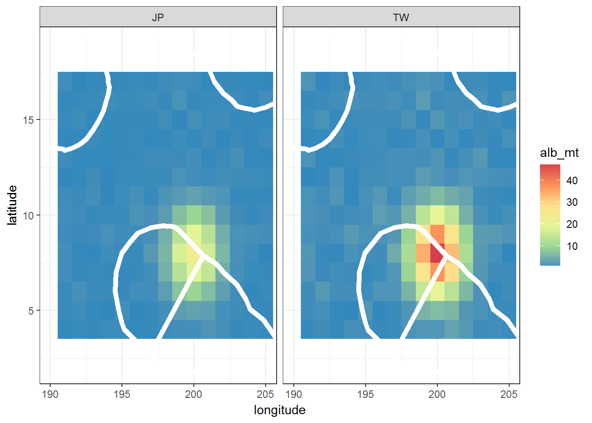

Load all the required packages.
library(survival)
library(maps)
library(maptools)
library(mapdata)
library(ggplot2)
library(plyr)
library(grid)
library(scatterpie)## Data for mapping:
load('fake-dorado-map-data.RData', verbose=TRUE)## Loading objects:
## fake.doradohead(fake.dorado)## Year latitude longitude flag_id alb_mt bet_mt yft_mt
## 1 2015 4 191 JP 0.11 0.40 0.20
## 2 2015 4 192 JP 0.34 0.16 0.08
## 3 2015 4 193 JP 0.14 1.12 0.56
## 4 2015 4 194 JP 0.53 0.06 0.03
## 5 2015 4 195 JP 0.43 0.10 0.05
## 6 2015 4 196 JP 0.11 1.24 0.62## EEZ Data
#eez overlay
eez <- read.table("EZNEW2.txt", sep=" ", header=F, skip=0) #All regions
eez_pna <- read.csv("pna_eez.csv") #PNA regions
## Import continent line dataset
load(file = 'continent-outlines-only.RData', verbose=TRUE)## Loading objects:
## countrydfall_states <- map_data("world2Hires")subdo <- subset(fake.dorado, fake.dorado$Year == 2015)
# how many rows with each year in my original dataset
table(fake.dorado$Year) ##
## 2015 2016
## 420 420# how many rows in my filtered dataset
table(subdo$Year)##
## 2015
## 420table(subdo$flag_id)##
## JP TW
## 210 210# subset for JP only
subdo_jp <- subset(subdo, subdo$flag_id == 'JP')
table(subdo_jp$flag_id) ##
## JP
## 210p <- ggplot() +
geom_tile(data=subdo_jp, aes(x=longitude, y=latitude, fill=alb_mt))
p
Make a heatmap of the yellowfin catch
p <- ggplot() +
geom_tile(data=subdo_jp, aes(x=longitude, y=latitude, fill=yft_mt))
p
Make a heatmap of the bigeye catch
p <- ggplot() +
geom_tile(data=subdo_jp, aes(x=longitude, y=latitude, fill=bet_mt))
p
Make a heatmap with a different colour scheme:
p <- ggplot() +
geom_tile(data=subdo_jp, aes(x=longitude, y=latitude, fill=alb_mt)) +
scale_fill_distiller(palette = 'Spectral')
p
p <- ggplot() +
geom_tile(data=subdo_jp, aes(x=longitude, y=latitude, fill=alb_mt)) +
scale_fill_distiller(palette = 'YlOrRd')
p
Now let’s add a new layer with EEZ outlines
p <- ggplot() +
geom_tile(data=subdo_jp, aes(x=longitude, y=latitude, fill=alb_mt)) +
scale_fill_distiller(palette = 'Spectral') +
## added a polygon layer with the EEZs, only drew EEZ outline (fill=NA)
geom_polygon(data=eez, aes(eez[,1], eez[,2]), size=2, colour="white", fill=NA) +
## narrowed the x and y range of the plot to fit our dataset
coord_cartesian(xlim=c(190,205), ylim=c(2,18)) +
theme_bw() # make background white instead of grey
p
The next step is to add our continent layer:
p <- ggplot() +
geom_tile(data=subdo_jp, aes(x=longitude, y=latitude, fill=alb_mt)) +
scale_fill_distiller(palette = 'Spectral') +
## added a polygon layer with the EEZs, only drew EEZ outline (fill=NA)
geom_polygon(data=eez, aes(eez[,1], eez[,2]), size=2, colour="white", fill=NA) +
## narrowed the x and y range of the plot to fit our dataset
coord_cartesian(xlim=c(180,205), ylim=c(2,26)) +
theme_bw() + # make background white instead of grey +
geom_path(data=countrydf, aes(x=lon, y=lat, group=id))
p## Warning: Removed 53 rows containing missing values (geom_path).
Draw this instead with the high resolution polygon dataset:
p <- ggplot() +
geom_tile(data=subdo_jp, aes(x=longitude, y=latitude, fill=alb_mt)) +
scale_fill_distiller(palette = 'Spectral') +
## added a polygon layer with the EEZs, only drew EEZ outline (fill=NA)
geom_polygon(data=eez, aes(eez[,1], eez[,2]), size=2, colour="white", fill=NA) +
## narrowed the x and y range of the plot to fit our dataset
coord_cartesian(xlim=c(180,205), ylim=c(2,26)) +
theme_bw() + # make background white instead of grey +
geom_polygon(data=all_states, aes(x=long, y=lat, group = group),
colour ="white", fill="grey10" )
p
p <- ggplot() +
geom_tile(data=subdo, aes(x=longitude, y=latitude, fill=alb_mt)) +
scale_fill_distiller(palette = 'Spectral') +
## added a polygon layer with the EEZs, only drew EEZ outline (fill=NA)
geom_polygon(data=eez, aes(x=V1, y=V2), size=2,
colour="white", fill=NA) +
## narrowed the x and y range of the plot to fit our dataset
coord_cartesian(xlim=c(190,205), ylim=c(2,19)) +
# coord_equal() +
theme_bw() +
facet_wrap(~flag_id)
p
Doing the same figure but with my Dorado extract. Make sure your Dorado folder (e.g. MH) in in the ggmaps folder. Note: for Dorado extracts only, need to specify fileEncoding='UTF-8-BOM'
dorado.dat <- read.csv('PW/PW custom report 100.csv', fileEncoding = 'UTF-8-BOM')Copyright © 2017 Pacific Community. All rights reserved.